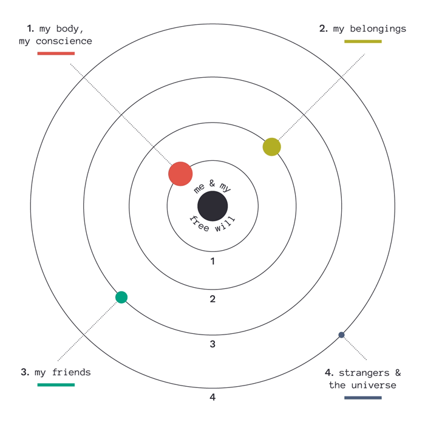

section
Open House: An Exploration of Ownership
by Taylor Simpson, May 2017
what is ownership?
definition: to own:
1. formal, to possess
2. informal, to take pride in
There are two definitions of the verb “to own” I am interested in. The first is to possess, and the second, informal definition is to take pride in, as in “I owned that game.” The latter is not usually used in relation to ownership of objects, but I propose that it should. In America, a country focused on mass-production and consumerism, people tend to accumulate objects without understanding why they chose to keep those objects in their lives. Writers like consumer researcher Russell Belk and expert-organizer Marie Kondo are challenging this notion, suggesting that objects are reflections of ourselves and even impact our well-being.
Being “one’s own” also has connotations of independence, strength, and confidence, i.e. acting with pride in oneself. By being mindful of what we choose to put in our spaces—objects that we see, touch, smell, wear, and use to support us every day—pride can be produced. I use the word mindful because far more important than the physical senses I mentioned, is the mind. Remember, the mind works like a web. An object is not just an object, but all the other things that object makes you think of—memories, people, places, emotions—and the things those make you think of. So often, feelings other than pride intrude on ownership because of these associations.
“Relationships with objects are never two-way (person-thing), but always three-way (person-thing-person).”
Russell Belk, "Possessions and the Extended Self"
how physical ownership happens
To understand why it is difficult to rid of objects, we must understand the different ways we can attain them. Purchasing is the most common. The hope is that when we buy something, it’s because we really need it or want it. But when there is a need for something, it doesn’t always mean there is money or time to buy the right thing, often resulting in getting the job done, but not satisfying every hope for what that object could be. Wanting is usually transient, and when the object is purchased and the adrenaline rush is over, you have the object but may not want it as you did before. Wanting is difficult in itself, sometimes coming with ulterior motives. It is not always the object we want, but what the object can give: beauty, style, credibility, status. In a perfect world, we would want an object for ourselves, and not because of what others may think about us.
Receiving objects can also come with unwanted emotions, especially when we don’t have an option of what that object is. We don’t always like the gifts we receive, and feelings of guilt can arise over that fact. Though people think they are hurting the giver by getting rid of their gift, more importantly, they are hurting themselves by not. In a more informal way, objects can also be passed down ensuing in similar feelings. An object with sentimental value because it belonged to someone you know is not always a useful or beautiful object. There can also be a sense of obligation and pressure added on, if the object is rare or has been in the family for years or followed traditions. Additionally, expensive purchases or gifts come with the added caveat of not wanting to waste money by giving them up.
In my case, I have created many of the objects I own. John Locke was of the first to formally propose that we own our labor, and therefore the products of our labor, because we own ourselves. But “Csikszentmihalyi and Rochberg-Halton (1981) provide a more psychological explanation suggesting that we invest ‘psychic energy’ in an object to which we have directed our efforts, time, and attention” (Belk). Due to this psychic energy, it can be difficult to discard of items created by hand. Instead of a lost money situation, it is a lost time situation, and a lost effort situation. And in the case of objects created by others, there is an added layer of sentimentality and respect attached, leading back to the guilt problem.
To sum up why it is difficult to discard of objects, no matter how they were acquired, I think Sartre was right when he said, “Hell is other people.” When getting rid of something, we often think we are letting down someone else, or even letting down ourselves. In her novel the Life Changing Magic of Tidying Up, decluttering guru Marie Kondo has a more general view, saying that “when we really delve into the reasons for why we can’t let something go, there are only two: an attachment to the past or a fear for the future.” People, money, tradition, effort, all of these fit into the multitudes stemming from the past and future.
discarding
When an object becomes a burden, emotionally or physically, it should be discarded. For comprehensive guidance on discarding, I highly recommended reading Marie Kondo. Her prime measurement for decision making regarding decluttering is holding the object and asking, “Does this spark joy?” At the root of this, Kondo is interested in making spaces that make their owners happy. As discussed previously, being surrounded by objects that incite good memories and confidence incites happiness, and being surrounded by objects that don’t incites the opposite. When discarding, Kondo is also interested in the role objects play in our lives:
“When you come across something that you cannot part with, think carefully about its true purpose in your life. You’ll be surprised at how many of the things you possess have already fulfilled their role. By acknowledging their contribution and letting them go with gratitude, you will be able to truly put the things you own, and your life, in order. In the end, all that will remain are the things that you really treasure. To truly cherish the things that are important to you, you must first discard those that have outlived their purpose.”
Marie Kondo, The Life Changing Magic of Tidying up
By role, Kondo means the initial purpose of the object. Compare this to a toothbrush, you don’t use it for more than half a year at most (I hope), because eventually the bristles become bent out of shape and don’t do their job of cleaning teeth as well. This is a case where it’s easy to tell an object has fulfilled its role and should be discarded, but we also aren’t usually attached to our toothbrushes either. Kondo’s prescription that “the space in which we live should be for the person we are becoming now, not for the person we were in the past,” can help with more complicated concepts of role. Because you loved something in the past, does not mean you have to love it now. That an object once brought you joy means that its purpose has been fulfilled. Role also comes by way of action for Kondo. For gifts, the purpose is to be received, and for purchases, it is the act of buying. Put this way, less pressure is put on the aftermath of those actions and the associations that come with them. What matters is how you feel about the object now.
Along with mental burden, objects can also be a physical burden. Objects take up a lot of space, and often, sit in those spaces for most of their lives, unused. Just look at any American basement. Even though I have lived in five different cities in the past four years, and moved four times just while living in Baltimore, there were still objects that mostly sat in storage unused before I went through my own process of discarding. Many of these objects I held onto because I thought they might (emphasis on the might) be useful in the future, or I never finished reading them or using them to their full potential. And in other cases, I held onto clothes I used to love or gifts I didn’t really like but that were from people I love. That mental energy translated into physical multiple times, carrying boxes into new living spaces.
Objects can also be a physical burden in the everyday. Just because an object is out in the open and is not being used, does not mean it’s not moved by hand often. On keeping things organized, the ‘one touch rule’ is essential. Let’s say you’re coming home and decide to put your jacket on the back of your desk chair, and then later you need the bag that is also hanging on the chair so you move the jacket to the doorknob. Then, you need to leave the room so you remove the jacket from the doorknob and finally hang it up. That took four touches, as opposed to just coming home and hanging up the jacket using one touch. While I admit I’m not the best at following this rule, I do think it’s helpful in terms of noticing what you always seem to be moving around throughout the day in order to get to something else. A combination of being better about putting things back where they belong, and discarding of objects, can help.
The way in which we get rid of objects is important too, especially considering the current climate, both politically and physically. It’s easy to just throw away objects we don’t want, but considering all other options first is better practice. Recycling is simple and encompasses a wide range of products, even electronics. For non-recyclable objects in relatively good condition, one option is to donate to second-hand stores and homeless shelters. If interested in helping a neighborhood community, objects can be left on the curb for free, letting passersby take what they want. The last option should always be throwing an object in the trash, going to landfills and contributing to pollution. In relation to other people, Marie Kondo advises not handing down an object to relatives or friends, unless they absolutely want the object. To understand this, all you have to do is imagine something that was passed on to you that you didn’t want.
positive ownership
Despite all the talk about ways ownership can go wrong, there are positive examples of ownership, i.e. meaningful objects. Objects can be extremely useful for completing tasks, by the hand or in the mind. In the article “Possessions and the Extended Self,” consumer behavior and marketing scholar Russell Belk even proposes:
“Objects in our possession literally can extend self, as when a tool or weapon allows us to do things of which we would otherwise be incapable. Possessions can also symbolically extend self, as when a uniform or trophy allows us to convince ourselves (and perhaps others) that we can be a different person than we would be without them.”
Russell Belk, “Possessions and the Extended Self”
The adjective ‘useful’ can then be applied to completing mental tasks too. If an object reminds you of an amazing vacation you had and makes you smile, isn’t it useful? Admiring an object for its beauty is also a form of positive ownership. Like the word useful, beauty has multiple definitions. For some, beauty may simply be about formal elements of the object, the touch, the shape, the smell. But for others, beauty is about the task that the object completes well, in a sense, its usefulness. Practical objects, on the other hand, are “of or concerned with the actual doing or use of something rather than with theory and ideas.” Because practical has a concrete definition, and useful and beautiful can be synonymous, that is the scale I used to define my own objects. Of course, the same object will result in different reports of practicality and beauty from different owners.
As proposed earlier, pride should be the main feeling associated with our possessions. There’s a sense of pride in saying “That’s mine” because it’s your object. But, that only happens when an possession is meaningful, providing value beyond the everyday object. If one has pride in the memories, people, or feelings associated with an object, they will for the object as well. The result of my ‘study’, if you will, of parsing through my own possessions is that I am now proud of all the objects I have kept, rather than ashamed or indifferent.
beyond physical ownership
For many millennials, digital ownership is just as important as physical objects. We grew up with videogames and computers, and phones became smarter as we did. We often get a bad rap for being glued to our technology, but to us, the web is as precious as our grandmother’s old box of photographs. Through social media, blogs, games, and files, our lives are stored on computers. They’re our cameras, our notebooks, our love letters, our toys, our art supplies. I learned a huge lesson on this when my own hard drive failed on me, losing thousands of photographs, essays, and my digital artwork from three years of art school. It was devastating, as I’m sure it would be to lose my physical possessions in a fire.
Technology also provides an opportunity to consolidate. It’s easy to delete files and save memory, as well as add to that memory through turning physical objects into digital ones. For example, in the future I may not have any of the 495 physical objects listed on this website, but I will have the website documenting their presence. For millennials, phone photographs often work in this way, not being as physically precious as film photographs that have limited frames and costly production in comparison. Phones can instead document the day to day, from a silly Snapchat to an adventure across the world. They become a way to own our experiences, a form of mental ownership.
In the same way, objects from the past can be kept through mental ownership, and are perhaps just as important as physical objects. Though memory is imperfect, it is vast, and we store many bits and pieces through it. In thinking of the past, possessions usually come to mind. Your favorite blanket when you were a child, the clothes you loved but outgrew, the toys you played with. Possessions you want to own in the future can be attained through mental ownership as well. Past and future then become part of the present, a part of the self, just invisible.
As stated before, we essentially own our experiences. Perhaps that again has to do with Locke’s theory of owning our labor. We do create our experiences after all. And we create our memories of those experiences. The self cannot be separated from that. In the end, ownership becomes a malleable thing, not just what we physically possess ourselves, but all the objects in the memories we possess too.
ownership and the extended self
“It seems an inescapable fact of modern life that we learn, define, and remind ourselves of who we are by our possessions.”
Russell Belk, "Possessions and the Extended Self"
In 1988, Russell Belk proposed the term extended self, stating, “The possessions central to self may be visualized in concentric layers around the core self, and will differ over individuals, over time, and over cultures that create shared symbolic meanings for different goods.That is, material possessions forming parts of our extended selves seem to form an anchor for our identities that reduces our fear that these identities will somehow be washed away.” Multiple studies on what constitutes as part of the extended self indicate:
“The greater the control we exercise, the more closely allied with self the object should become. This principle led McClelland to hypothesize the following hierarchy of most to least closely self-allied object categories: (1) me, my "free will," (2) my body, my conscience, (3) my belongings, (4) my friends, and (5) strangers, physical universe."
Russell Belk, “Possessions and the Extended Self”
To some degree, all of these are part of the extended self, from cell to space. In addition to control, Sartre contends that knowing an object is another way to incorporate it into the self. Spending time on not just objects, but people, places, etc., and gaining intimate knowledge of them, allows us to perceive them as a part of self without physically owning them.
“The possessions incorporated in extended self serve valuable functions to healthy personalities. One such function is acting as an objective manifestation of the self.”
Russell Belk, "Possessions and the Extended Self"
Ownership is then a means of identity—we are what we own. Our objects are our interests, our desires, our mistakes, our symbols, and we should acknowledge and be proud of that. Belk adds, “Our accumulation of possessions provides a sense of past and tells us who we are, where we have come from, and perhaps where we are going.” Our objects also help us identify with others, as a group of people like hipsters or punk rockers, people in the same profession, or people living in the same neighborhood (which all think they own it). Identifying with others can also happen one on one because objects are all around us, and therefore prevalent conversation topics. This is a good thing.
beyond self
“If I am what I have and if what I have is lost, who then am I?”
Erich Fromm, To Have or to Be? The Nature of the Psyche
Already, there seem to be changes in the ways of ownership. With the rise of ride share companies like Lyft and Zipcar, what else besides cars will be included in shared ownership in the future? Clothes are already on the way, with companies like Rent the Runway allowing temporary ownership at a fraction of the clothing’s original cost. It’s difficult to imagine a world where nearly everything is shared, and perhaps impossible considering that consumerism and materialism are still running strong. America loves importing and producing goods and Americans love buying them. This implies that most Americans have a lot of unnecessary possessions, and in those cases Belk would argue there is a decreased sense of self. But worse than that are the environmental consequences of mass production and our throw away society. If we keep using up and polluting valuable resources important to the health of our earth, ownership may not be a possibility at all.
In this process, I want to recognize that I come from a place of privilege and my opinions are formed by that. I am a white, able-bodied woman from the US, and the way that I assess what is important in ownership will not be everybody’s view. For purposes of this project and assessing what I own to create a space meaningful to me, I have met my goals. But I am curious, how does a blind person view ownership? A minority? A person in another country? Though I am not rich, I certainly have privilege with money as well. My parents didn’t have trouble getting me the things I wanted at holidays or my birthday, and have helped provide for my college education. Only 264 out of the 495 objects I own, a little more than half, were purchased by me. For many, that is not the case, as they are completely supporting themselves with only the necessities, if even that.
In any case, my hope is that moving forward, those of you reading this and those not, will be more conscious of the objects you own. Pay attention to the way you own them, physically, mentally, and appreciate where you have come and where you are going. Perhaps, if you’re feeling inspired, even recycle or donate a few objects you no longer find practical, beautiful, or part of your extended self. I’m not saying you should turn into a minimalist (I am by no means), but be present. And so, I leave you with this:
“How is it that a kitchen table we once admired in a shop window can later become the stable, silent foundation of family meals and conversations with friends? How can a house lose its status as a confronted object to become a virtual foundation of our life? All these questions lead us back to the body.”
Bernd Jager, "Body, House, City or the Intertwinings of Embodiment, Inhabitation, and Civilization,” 1983
Taylor Simpson is a Graphic Design BFA candidate at the Maryland Institute College of Art, graduating in May 2017. Her main interests are branding, motion graphics, UI/UX design, coding, and writing. View her work here.
resources